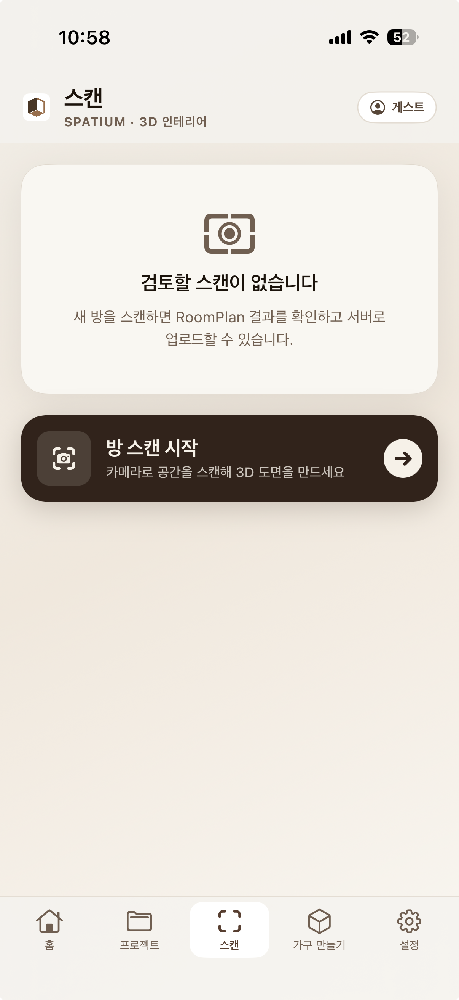
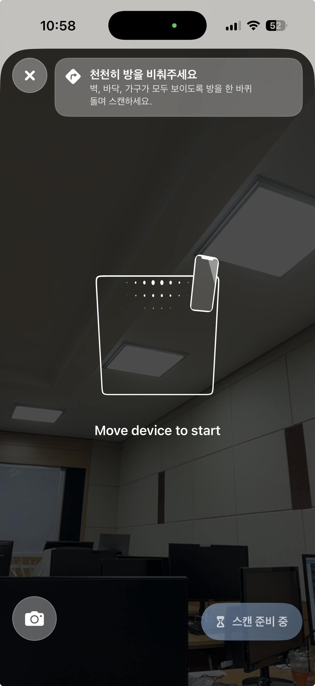
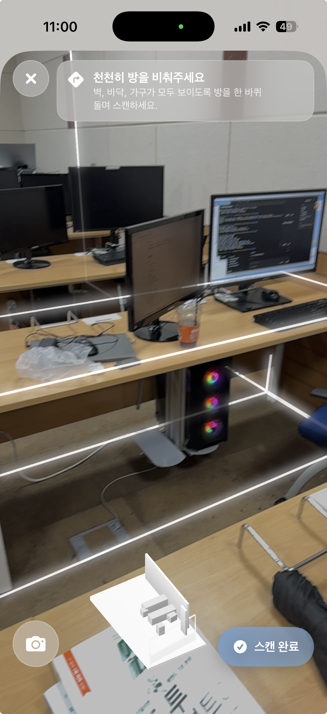
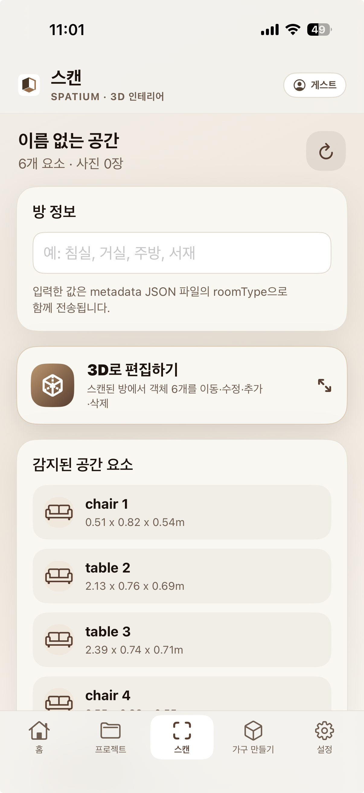
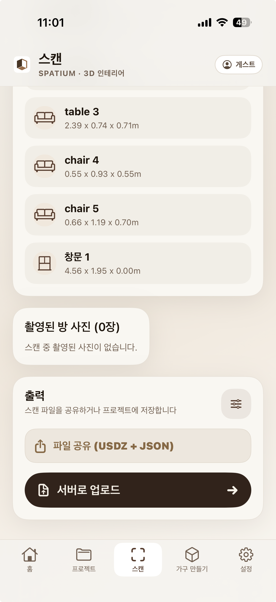

프로젝트를 먼저 준비
첫 스캔을 시작하면 새 프로젝트 생성 화면이 열립니다. 공간을 묶어 관리할 프로젝트 이름을 정한 뒤 스캔으로 이동하세요.
방을 천천히 한 바퀴 비추면 SPATIUM이 벽·바닥·가구·문·창문을 인식해 3D 도면을 만듭니다. 스캔 결과를 검토하고 편집한 뒤 프로젝트에 안전하게 저장해보세요.

아래 세 가지만 확인하면 벽과 가구의 위치를 더 안정적으로 기록할 수 있습니다.
첫 스캔을 시작하면 새 프로젝트 생성 화면이 열립니다. 공간을 묶어 관리할 프로젝트 이름을 정한 뒤 스캔으로 이동하세요.
커튼을 열거나 조명을 켜고, 방 가장자리를 천천히 돌 수 있도록 바닥의 장애물을 치워주세요. 거울이나 단색 벽만 오래 비추지 않는 것이 좋습니다.
Apple RoomPlan을 사용할 수 있는 iPhone 또는 iPad에서 진행하고, SPATIUM의 카메라 접근을 허용하세요. 배터리도 충분히 충전해두세요.
실제 앱 화면과 코드의 처리 순서에 맞춰 시작부터 저장까지 안내합니다.
하단 메뉴의 스캔을 열고 방 스캔 시작을 누르세요. 첫 스캔이라면 새 프로젝트를 만든 뒤 카메라 화면으로 이동합니다.
카메라가 열리면 화면의 안내에 따라 기기를 천천히 좌우로 움직이세요. RoomPlan이 주변 공간을 인식하면 스캔 가능한 상태가 됩니다.

한쪽 벽에서 시작해 같은 방향으로 이동하면서 벽·바닥·가구·문·창문이 모두 보이게 비추세요. 인식된 면과 객체는 흰 선 및 하단의 미니 3D 모델로 표시됩니다.

시작 지점까지 한 바퀴 돌았다면 하단 미니 모델에서 방 윤곽을 확인하세요. 주요 면과 가구가 충분히 보이면 스캔 완료를 누르고 결과 처리가 끝날 때까지 기다립니다.
결과 화면에서 방 이름, 감지된 객체의 종류·크기, 촬영 사진 수를 확인하세요. 방 정보에 입력한 값은 함께 저장되는 metadata JSON의 roomType으로 전달됩니다.


결과를 다듬으려면 3D로 편집하기, 파일로 보관하려면 파일 공유, 현재 프로젝트에 저장하려면 서버로 업로드를 선택하세요.
조명을 밝게 켜고 형태가 분명한 벽 모서리와 바닥을 비추며 기기를 천천히 좌우로 움직이세요.
빠진 면과 물체를 다른 각도에서 다시 비춰주세요. 완료 후 객체 문제는 3D 편집에서도 보정할 수 있습니다.
사진은 자동 촬영되지 않습니다. 스캔 중 왼쪽 카메라 버튼을 눌렀을 때만 참고 사진이 추가됩니다.
결과 화면 상단의 다시 스캔 버튼을 누르세요. 현재 검토 중인 스캔을 비우고 새 스캔을 시작합니다.
프로젝트가 선택되어 있는지, 네트워크와 설정의 서버 주소가 올바른지 확인하세요. 파일 공유로 백업할 수도 있습니다.
기본적으로 방 메시 USDZ와 metadata JSON이 생성되며, 직접 촬영한 사진이 있으면 JPG 파일도 함께 포함됩니다.
프로젝트를 준비하고 방의 벽과 바닥, 가구가 모두 보이도록 천천히 한 바퀴 비춰주세요.